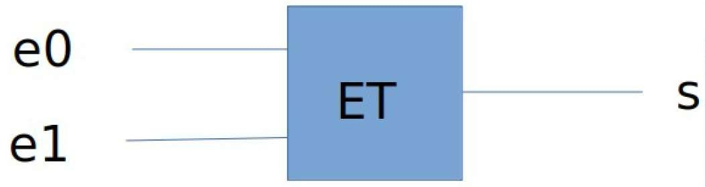
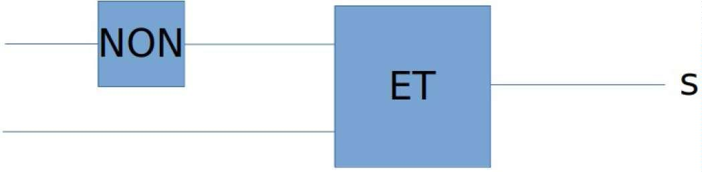

2022 Polynésie Jour 1
Sujet Polynésie Jour 1 en PDF
«programmation», et principalement de la récursivité.
On rappelle qu'une chaîne de caractères peut être représentée en Python par un texte entre guillemets "" et que :
- la fonction len renvoie la longueur de la chaîne de caractères passée en paramètre ;
- si une variable ch désigne une chaîne de caractères, alors ch[0] renvoie son premier caractère, ch[1] le deuxième, etc. ;
- l'opérateur + permet de concaténer deux chaînes de caractères.
Exemples :
On s'intéresse dans cet exercice à la construction de chaînes de caractères suivant certaines règles de construction.
Règle A : une chaîne est construite suivant la règle A dans les deux cas suivants:
- soit elle est égale à "a" ;
- soit elle est de la forme "a"+chaine+"a", où chaine est une chaîne de caractères construite suivant la règle A.
Règle B : une chaîne est construite suivant la règle B dans les deux cas suivants :
- soit elle est de la forme "b"+chaine+"b", où chaine est une chaîne de caractères construite suivant la règle A ;
- soit elle est de la forme "b"+chaine+"b", où chaine est une chaîne de caractères construite suivant la règle B.
On a reproduit ci-dessous l'aide de la fonction choice du module random.
>>>from random import choice
>>>help(choice)
Help on method choice in module random:
choice(seq) method of random.Random instance
Choose a random element from a non-empty sequence.
La fonction A() ci-dessous renvoie une chaîne de caractères construite suivant la règle A, en choisissant aléatoirement entre les deux cas de figure de cette règle.
- a. Cette fonction est-elle récursive ? Justifier. b. La fonction choice([True, False]) peut renvoyer False un très grand nombre de fois consécutives. Expliquer pourquoi ce cas de figure amènerait à une erreur d'exécution.
Dans la suite, on considère une deuxième version de la fonction A. À présent, la fonction prend en paramètre un entier n tel que, si la valeur de n est négative ou nulle, la fonction renvoie "a". Si la valeur de n est strictement positive, elle renvoie une chaîne de caractères construite suivant la règle A avec un n décrémenté de 1, en choisissant aléatoirement entre les deux cas de figure de cette règle.
- a. Recopier sur la copie et compléter aux emplacements des points de suspension ... le code de cette nouvelle fonction A.
b. Justifier le fait qu'un appel de la forme A(n) avec n un nombre entier positif inférieur à 50, termine toujours.
On donne ci-après le code de la fonction récursive B qui prend en paramètre un entier n et qui renvoie une chaîne de caractères construite suivant la règle B.
def B(n):
if n <= 0 or choice([True, False]):
return "b" + A(n-1) + "b"
else:
return "b" + B(n-1) + "b"
On admet que :
- les appels A(-1)et A(0) renvoient la chaîne "a";
- l’appel A(1) renvoie la chaîne "a" ou la chaîne "aaa";
-
l’appel A(2) renvoie la chaîne "a", la chaîne "aaa" ou la chaîne "aaaaa".
-
Donner toutes les chaînes possibles renvoyées par les appels B(0), B(1) et B(2).
On suppose maintenant qu'on dispose d'une fonction raccourcir qui prend comme paramètre une chaîne de caractères de longueur supérieure ou égale à 2, et renvoie la chaîne de caractères obtenue à partir de la chaîne initiale en lui ôtant le premier et le dernier caractère.
Par exemple :
- a. Recopier sur la copie et compléter les points de suspension ... du code de la fonction regleA ci-dessous pour qu'elle renvoie True si la chaîne passée en paramètre est construite suivant la règle A, et False sinon.
def regleA(chaine):
n = len(chaine)
if n >= 2:
return chaine[0] == "a" and chaine[n-1] == "a" and
regleA(...)
else:
return chaine == ...
b. Écrire le code d’une fonction regleB, prenant en paramètre une chaîne de caractères et renvoyant True si la chaîne est construite suivant la règle B, et False sinon.
« architecture matérielle », et principalement d'ordonnancement et d'expressions booléennes.
Un système est composé de 4 périphériques, numérotés de 0 à 3, et d'une mémoire, reliés entre eux par un bus auquel est également connecté un dispositif ordonnanceur. À l'aide d'un signal spécifique envoyé sur le bus, l'ordonnanceur sollicite à tour de rôle les périphériques pour qu'ils indiquent le type d'opération (lecture ou écriture) qu'ils souhaitent effectuer, et l'adresse mémoire concernée.
Un tour a lieu quand les 4 périphériques ont été sollicités. Au début d'un nouveau tour, on considère que toutes les adresses sont disponibles en lecture et écriture.
Si un périphérique demande l'écriture à une adresse mémoire à laquelle on n'a pas encore accédé pendant le tour, l'ordonnanceur répond "OK" et l'écriture a lieu.
Si on a déjà demandé la lecture ou l'écriture à cette adresse, l'ordonnanceur répond "ATT" et l'opération n'a pas lieu.
Si un périphérique demande la lecture à une adresse à laquelle on n'a pas encore accédé en écriture pendant le tour, l'ordonnanceur répond "OK" et la lecture a lieu.
Plusieurs lectures peuvent avoir donc lieu pendant le même tour à la même adresse.
Si un périphérique demande la lecture à une adresse à laquelle on a déjà accédé en écriture, l'ordonnanceur répond "ATT" et la lecture n'a pas lieu.
Ainsi, pendant un tour, une adresse peut être utilisée soit une seule fois en écriture, soit autant de fois qu'on veut en lecture, soit pas utilisée.
Si un périphérique ne peut pas effectuer une opération à une adresse, il demande la même opération à la même adresse au tour suivant.
-
Le tableau donné en annexe 1 indique, sur chaque ligne, le périphérique sélectionné, l'adresse à laquelle il souhaite accéder et l'opération à effectuer sur cette adresse. Compléter dans la dernière colonne de cette annexe, à rendre avec la copie, la réponse donnée par l'ordonnanceur pour chaque opération. On suppose dans toute la suite que :
-
le périphérique 0 écrit systématiquement à l'adresse 10 ;
- le périphérique 1 lit systématiquement à l'adresse 10 ;
- le périphérique 2 écrit alternativement aux adresses 11 et 12 ;
- le périphérique 3 lit alternativement aux adresses 11 et 12 ;
Pour les périphériques 2 et 3, le changement d’adresse n’est effectif que lorsque l’opération et réalisée.
- On suppose que les périphériques sont sélectionnés à chaque tour dans l'ordre 0 ; 1 ; 2 ; 3. Expliquer ce qu'il se passe pour le périphérique 1.
Les périphériques sont sollicités de la manière suivante lors de quatre tours successifs :
- au premier tour, ils sont sollicités dans l’ordre 0 ; 1 ; 2 ; 3 ;
- au deuxième tour, dans l’ordre 1 ; 2 ; 3 ; 0 ;
- au troisième tour, 2 ; 3 ; 0 ; 1 ;
- puis 3 ; 0 ; 1 ; 2 au dernier tour.
-
Et on recommence...
-
a. Préciser pour chacun de ces tours si le périphérique 0 peut écrire et si le périphérique 1 peut lire.
b. En déduire la proportion des valeurs écrites par le périphérique 0 qui sont effectivement lues par le périphérique 1.
On change la méthode d'ordonnancement : on détermine l'ordre des périphériques au cours d'un tour à l'aide de deux listes d'attente ATTL_L et ATT_E établies au tour précédent.
Au cours d'un tour, on place dans la liste ATT_L toutes les opérations de lecture mises en attente, et dans la liste d'attente ATT_E toutes les opérations d'écriture mises en attente.
Au début du tour suivant, on établit l'ordre d'interrogation des périphériques en procédant ainsi :
-
on interroge ceux présents dans la liste ATT_L, par ordre croissant d'adresse,
-
on interroge ensuite ceux présents dans la liste ATT_E, par ordre croissant d'adresse,
puis on interroge les périphériques restants, par ordre croissant d’adresse.
- Compléter et rendre avec la copie le tableau fourni en annexe 2, en utilisant l'ordonnancement décrit ci-dessus, sur 3 tours.
Les colonnes e0 et e1 du tableau suivant recensent les deux chiffres de l'écriture binaire de l’entier n de la première colonne.
| nombre n | écriture binaire de n sur deux bits | e1 | e0 |
|---|---|---|---|
| 0 | 00 | 0 | 0 |
| 1 | 01 | 0 | 1 |
| 2 | 10 | 1 | 0 |
| 3 | 11 | 1 | 1 |
L'ordonnanceur attribue à deux signaux sur le bus de données les valeurs de e0 et e1 associées au numéro du circuit qu’il veut sélectionner. On souhaite construire à l'aide des portes ET, OU et NON un circuit pour chaque périphérique.
Chacun des quatre circuits à construire prend en entrée deux signaux e0 et e1, le signal de sortie s valant 1 uniquement lorsque les niveaux de e0 et e1 correspondent aux bits de l'écriture en binaire du numéro du périphérique correspondant.
Par exemple, le circuit ci-dessous réalise la sélection du périphérique 3. En effet, le signal s vaut 1 si et seulement si e0 et e1 valent tous les deux 1.

- a. Recopier sur la copie et indiquer dans le circuit ci-dessous les entrées e0 et e1 de façon à ce que ce circuit sélectionne le périphérique 1.

b. Dessiner un circuit constitué d'une porte ET et d'une porte NON, qui sélectionne le périphérique 2.
c. Dessiner un circuit permettant de sélectionner le périphérique 0.
« base de données », et principalement du modèle relationnel et du langage SQL.
L’énoncé de cet exercice peut utiliser les mots du langage SQL suivants :
CREATE TABLE, SELECT, FROM, WHERE, JOIN ON, INSERT INTO, VALUES,
UPDATE, SET, DELETE, COUNT, DISTINCT, AND, OR, AS, ORDER BY, ASC, DESC
Un site web recueille des données de navigation dans une base de données afin d'étudier les profils de ses visiteurs.
Chaque requête d'interrogation d'une page de ce site est enregistrée dans une première table dénommée Visites sous la forme d'un 5-uplet : (identifiant, adresse IP, date et heure de visite, nom de la page, navigateur).
Le chargement de la page index.html par 192.168.1.91 le 12 juillet 1998 à 22h48 aura par exemple été enregistré de la façon suivante :
(1534, "192.168.1.91", "1998-07-12 22:48:00", "index.html", "Internet explorer 4.1").
La commande SQL ayant permis de créer cette table est la suivante:
CREATE TABLE Visites (
identifiant INTEGER NOT NULL UNIQUE,
ip VARCHAR(15),
dateheure DATETIME,
nompage TEXT,
navigateur TEXT
);
- a. Donner une commande d'interrogation en langage SQL permettant d'obtenir l'ensemble des 2-uplets (adresse IP, nom de la page) de cette table.
b. Donner une commande en langage SQL permettant d'obtenir l'ensemble des adresses IP ayant interrogé le site, sans doublon.
c. Donner une commande en langage SQL permettant d'obtenir la liste des noms des pages visitées par l'adresse IP 192.168.1.91
Ce site web met en place, sur chacune de ses pages, un programme en javascript qui envoie au serveur, à intervalle régulier de 15 secondes, le temps en secondes de présence sur la page. Ces envois contiennent tous la valeur de identifiant correspondant au chargement initial de la page.
Par exemple, si le visiteur du 12 juillet 1998 est resté 65 secondes sur la page, celle-ci a envoyé au serveur les 4 doublets (1534, 15), (1534, 30), (1534, 45) et (1534, 60).
Ces données sont enregistrées dans une table nommée Pings créée avec la commande ci-dessous :
En plus de l'inscription d'une ligne dans la table Visites, chaque chargement d'une nouvelle page provoque l'insertion d'une ligne dans la table Pings comprenant l'identifiant de ce chargement et une durée de 0.
Les attributs identifiant des tables Visites et Pings partagent les mêmes valeurs.
- a. De quelle table l’attribut identifiant est-il la clé primaire ?
b. De quelle table l’attribut identifiant est-il une clé étrangère ?
c. Par conséquent, quelles vérifications sont automatiquement effectuées par le système de gestion de base de données ?
- Le serveur reçoit le doublet (identifiant, duree) suivant : (1534, 105). Écrire la commande SQL d'insertion qui permet d'ajouter cet enregistrement à la table Pings.
On envisage ensuite d'optimiser la table en se contentant d'une seule ligne par identifiant dans la table Pings : les valeurs de l'attribut duree devraient alors être mises à jour à chaque réception d'un nouveau doublet (identifiant, duree).
- a. Écrire la requête de mise à jour permettant de fixer à 120 la valeur de l'attribut duree associée à l'identifiant 1534 dans la table Pings.
b. Expliquer pourquoi on ne peut pas être certain que les données envoyées par une page web, depuis le navigateur d'un client, via plusieurs requêtes formulées en javascript, arrivent au serveur dans l'ordre dans lequel elles ont été émises.
c. En déduire qu'il est préférable d'utiliser une requête d'insertion plutôt qu'une requête de mise à jour pour ajouter des données à la table Pings.
- Écrire une requête SQL utilisant le mot-clef JOIN et une clause WHERE, permettant de trouver les noms de toutes les pages qui ont été consultées plus d'une minute par au moins un utilisateur.
« structures de données », et principalement des piles.
La classe Pile utilisée dans cet exercice est implémentée en utilisant des listes Python et propose quatre éléments d'interface :
- Un constructeur qui permet de créer une pile vide, représentée par [] ;
- La méthode est_vide()qui renvoie True si l'objet est une pile ne contenant aucun élément, et False sinon ;
- La méthode empiler qui prend un objet quelconque en paramètre et ajoute cet objet au sommet de la pile. Dans la représentation de la pile dans la console, cet objet apparaît à droite des autres éléments de la pile ;
- La méthode depiler qui renvoie l'objet présent au sommet de la pile et le retire de la pile.
Exemples :
>>> mapile = Pile()
>>> mapile.empiler(2)
>>> mapile
[2]
>>> mapile.empiler(3)
>>> mapile.empiler(50)
>>> mapile
[2, 3, 50]
>>> mapile.depiler()
50
>>> mapile
[2, 3]
La méthode est_triee ci-dessous renvoie True si, en dépilant tous les éléments, ils sont traités dans l'ordre croissant, et False sinon.
```python showLineNumbers def est_triee(self): if not self.est_vide() : e1 = self.depiler() while not self.est_vide(): e2 = self.depiler() if e1 ... e2 : return False e1 = ... return True
1. Recopier sur la copie les lignes 6 et 8 en complétant les points de suspension.
On créé dans la console la pile A représentée par [1, 2, 3, 4].
2. a. Donner la valeur renvoyée par l’appel A.est_triee().
b. Donner le contenu de la pile A après l'exécution de cette instruction.
On souhaite maintenant écrire le code d’une méthode depileMax d'une pile non vide
ne contenant que des nombres entiers et renvoyant le plus grand élément de cette pile
en le retirant de la pile.
Après l'exécution de p.depileMax(), le nombre d'éléments de la pile p diminue donc
de 1.
```python showLineNumbers
def depileMax(self):
assert not self.est_vide(), "Pile vide"
q = Pile()
maxi = self.depiler()
while not self.est_vide() :
elt = self.depiler()
if maxi < elt :
q.empiler(maxi)
maxi = ...
else :
...
while not q.est_vide():
self.empiler(q.depiler())
return maxi
- Recopier sur la copie les lignes 9 et 11 en complétant les points de suspension.
On créé la pile B représentée par [9, -7, 8, 12, 4] et on effectue l’appel B.depileMax().
- a. Donner le contenu des piles B et q à la fin de chaque itération de la boucle while de la ligne 5.
b. Donner le contenu des piles B et q avant l’exécution de la ligne 14.
c. Donner un exemple de pile qui montre que l'ordre des éléments restants n’est pas préservé après l’exécution de depileMax.
On donne le code de la méthode traiter() :
```python showLineNumbers def traiter(self): q = Pile() while not self.est_vide(): q.empiler(self.depileMax()) while not q.est_vide(): self.empiler(q.depiler())
5. a. Donner les contenus successifs des piles B et q
- avant la ligne 3,
- avant la ligne 5,
- à la fin de l’exécution de la fonction traiter
lorsque la fonction traiter est appliquée sur la pile B contenant [1, 6, 4, 3, 7, 2].
b. Expliquer le traitement effectué par cette méthode.
## « algorithmique », et principalement des algorithmes sur les arbres binaires.
_Cet exercice traite du thème « algorithmique », et principalement des algorithmes sur les arbres binaires._
On manipule ici les arbres binaires avec trois fonctions :
- est_vide(A) qui renvoie True si l'arbre binaire A est vide, False s'il ne l'est
pas ;
- sous_arbre_gauche(A) qui renvoie le sous-arbre gauche de l'arbre binaire A ;
- sous_arbre_droit(A) qui renvoie le sous-arbre droit de l'arbre binaire A.
L'arbre
binaire
renvoyé
par
les
fonctions
sous_arbre_gauche
sous_arbre_droit peut éventuellement être l'arbre vide.
et
On définit la hauteur d'un arbre binaire non vide de la façon suivante :
- si ses sous-arbres gauche et droit sont vides, sa hauteur est 0 ;
- si l'un des deux au moins est non vide, alors sa hauteur est égale à 1 + M, où M
est la plus grande des hauteurs de ses sous-arbres (gauche et droit) non vides.
1. a. Donner la hauteur de l'arbre ci-dessous.
b. Dessiner sur la copie un arbre binaire de hauteur 4.
La hauteur d'un arbre est calculée par l'algorithme récursif suivant :
1 Algorithme hauteur(A):
2
test d'assertion : A est supposé non vide
3
si sous_arbre_gauche(A) vide et sous_arbre_droit(A) vide:
4
renvoyer 0
5
sinon, si sous_arbre_gauche(A) vide:
6
renvoyer 1 + hauteur(sous_arbre_droit(A))
7
sinon, si ... :
8
renvoyer ...
9
sinon:
10
renvoyer 1 + max(hauteur(sous_arbre_gauche(A)),
11
hauteur(sous_arbre_droit(A)))
2. Recopier sur la copie les lignes 7 et 8 en complétant les points de suspension.
3. On considère un arbre binaire R dont on note G le sous-arbre gauche et D le
sous-arbre droit. On suppose que R est de hauteur 4 et G de hauteur 2.
a. Justifier le fait que D n'est pas l'arbre vide et déterminer sa hauteur.
b. Illustrer cette situation par un dessin.
Soit un arbre binaire non vide de hauteur h. On note n le nombre de nœuds de cet
h+1
arbre. On admet que h+ 1 ⩽ n ⩽ 2 −1 . 4. a. Vérifier ces inégalités sur l'arbre binaire de la question 1.a.
b. Expliquer comment construire un arbre binaire de hauteur h quelconque
ayant h+1 nœuds.
c. Expliquer comment construire un arbre binaire de hauteur h quelconque ayant
h+1
2 −1 nœuds.
Indication : 2h+1−1 = 1+2+4+...+2h .
L'objectif de la fin de l’exercice est d'écrire le code d'une fonction fabrique(h, n) qui
prend comme paramètres deux nombres entiers positifs h et n tels que
h+1
h+ 1 < n < 2 −1 , et qui renvoie un arbre binaire de hauteur h à n nœuds.
Pour cela, on a besoin des deux fonctions suivantes:
- arbre_vide(), qui renvoie un arbre vide ;
- arbre(gauche, droit) qui renvoie l'arbre de fils gauche gauche et de fils
droit droit.
5. Recopier sur la copie l'arbre binaire ci-dessous et numéroter ses nœuds de 1 en
1 en commençant à 1, en effectuant un parcours en profondeur préfixe.
La fonction fabrique ci-dessous a pour but de répondre au problème posé. Pour cela,
la fonction annexe utilise la valeur de n, qu'elle peut modifier, et renvoie un arbre
binaire de hauteur hauteur_max dont le nombre de nœuds est égal à la valeur de n au
moment de son appel.
```python showLineNumbers
1. def fabrique(h, n):
2.
def annexe(hauteur_max):
3.
if n == 0 :
4.
return arbre_vide()
5.
elif hauteur_max == 0:
6.
n = n - 1
7.
return ...
8.
else:
9.
n = n - 1
10.
gauche = annexe(hauteur_max - 1)
11.
droite = ...
12.
return arbre(gauche, droite)
13.
return annexe(h)
- Recopier sur la copie les lignes 7 et 11 en complétant les points de suspension.
Annexe 1 de l’exercice 2, à rendre avec la copie.
Numéro du périphérique
Adresse
Opération
Réponse de l'ordonnanceur
0
10
écriture
OK
1
11
lecture
OK
2
10
lecture
ATT
3
10
écriture
ATT
0
12
lecture
1
10
lecture
2
10
lecture
3
10
écriture
Annexe 2 de l'exercice 2, à rendre avec la copie Tour Numéro du périphérique
Adresse
Opération
Réponse de l'ordonnanceur
ATT_L
ATT_E
1
0
10
écriture
OK
vide
vide
1
1
10
lecture
ATT
(1,10)
vide
1
2
11
écriture
1
3
11
lecture
2
1
10
lecture
3
0
10
écriture
3
1
10
lecture
3
2
11
écriture
3
3
12
lecture
vide
2 2 2
22-NSIJ1PO1
vide
vide vide
OK
(1,10)
vide
16/16
Créé: February 4, 2023